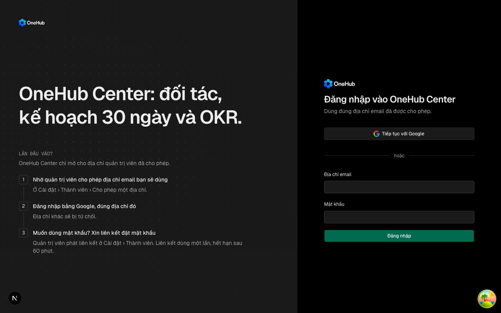

| Eval | Tiêu chí | Loại | Verdict | run_id | verified_at |
|---|---|---|---|---|---|
| E1 | AC-1 | test | PASS | minted-phien-chet-ve-dang-nhap-E1-r1 | 2026-09-28T02:16:52Z |
| E2 | AC-2 | test | PASS | minted-phien-chet-ve-dang-nhap-E2-r1 | 2026-09-28T02:16:52Z |
| E3 | AC-3 | test | PASS | minted-phien-chet-ve-dang-nhap-E3-r1 | 2026-09-28T02:16:52Z |
| E4 | AC-4 | test | PASS | minted-phien-chet-ve-dang-nhap-E4-r1 | 2026-09-28T02:16:52Z |
| E5 | AC-5 | test | PASS | minted-phien-chet-ve-dang-nhap-E5-r1 | 2026-09-28T02:16:52Z |
| E6 | AC-6 | test | PASS | minted-phien-chet-ve-dang-nhap-E6-r1 | 2026-09-28T02:16:52Z |
| E7 | AC-7 | test | PASS | minted-phien-chet-ve-dang-nhap-E7-r1 | 2026-09-28T02:16:52Z |
| E8 | AC-8 | test | PASS | minted-phien-chet-ve-dang-nhap-E8-r1 | 2026-09-28T02:16:52Z |
| E9 | AC-9 | ui-check | PASS | minted-phien-chet-ve-dang-nhap-E9-r1 | 2026-09-28T02:16:52Z |
| E10 | AC-9 | script | PASS | minted-phien-chet-ve-dang-nhap-E10-r1 | 2026-09-28T02:16:52Z |
| E11 | AC-10 | test | PASS | minted-phien-chet-ve-dang-nhap-E11-r1 | 2026-09-28T02:16:52Z |
AC-1: Given `IS_MARKETING` tắt và request mang cookie phiên mà `workspace.get` trả HTTP 401, When proxy xử lý `/`, `/<slug>/companies`, `/companies`, `/onboarding` hoặc `/onboarding/research`, Then phản hồi là chuyển hướng tới `/sign-in`.
cd apps/app && bun test ./test/onboarding-gate.spec.ts -t het-phien Ran 2 tests across 1 file. [42.00ms] __EXIT=0
AC-2: Given request mang cookie phiên tới một đường có cổng, When `workspace.get` hết giờ, lỗi mạng, trả 5xx hoặc 403, Then proxy KHÔNG chuyển tới `/sign-in` và giữ đúng hành vi trước vòng này.
cd apps/app && bun test ./test/onboarding-gate.spec.ts -t giu-mo Ran 1 test across 1 file. [40.00ms] __EXIT=0
AC-3: Given cookie phiên chết (API trả 401), When proxy xử lý `/sign-in`, một đường ẩn danh (`/t/…`, `/proto/…`, `/dat-mat-khau/…`, `/quen-mat-khau`) hoặc một đường `UNGATED` (`/grant-access`, `/eve/…`, `/het-quyen`), Then proxy không gọi API và không chuyển hướng; và Given `IS_MARKETING=true`, When proxy xử lý `/` với cookie chết, Then không chuyển hướng (landing công khai giữ nguyên).
cd apps/app && bun test ./test/onboarding-gate.spec.ts -t khong-dung Ran 1 test across 1 file. [49.00ms] __EXIT=0
AC-4: Given phản hồi của `workspace.get`, When `readWorkspaceGate` đọc nó, Then `hetPhien` là `true` khi và chỉ khi status là 401; 200, 403, 5xx, timeout, lỗi mạng và request không cookie đều cho `false`, còn `gate`/`slug`/`inWorkspace`/`viewerRole` giữ đúng giá trị như trước vòng này.
cd apps/app && bun test ./test/onboarding-gate.spec.ts -t doc-401 Ran 1 test across 1 file. [45.00ms] __EXIT=0
AC-5: Given `IS_MARKETING` tắt và `getSession()` trả `null`, When trang `/` được vẽ, Then trang chuyển hướng tới `/sign-in` và không vẽ landing.
cd apps/app && TZ=Asia/Ho_Chi_Minh bun test --preload ../../packages/ui/test/setup-dom.ts ./test/phien-chet-trang-goc.dom.tsx -t khong-phien __EXIT=0
AC-6: Given `IS_MARKETING` tắt và `getSession()` trả một phiên, When trang `/` được vẽ, Then trang hỏi `workspace.get` từ máy chủ và chuyển tới `/<slug>`; khi lời hỏi đó lỗi hoặc không có slug, trang ném lỗi — không chuyển tới `/sign-in`, không vẽ landing.
cd apps/app && TZ=Asia/Ho_Chi_Minh bun test --preload ../../packages/ui/test/setup-dom.ts ./test/phien-chet-trang-goc.dom.tsx -t con-phien Ran 1 test across 1 file. [377.00ms] __EXIT=0
AC-7: Given `IS_MARKETING=true`, When trang `/` được vẽ, Then landing hiện như trước và trang không đọc phiên.
cd apps/app && TZ=Asia/Ho_Chi_Minh bun test --preload ../../packages/ui/test/setup-dom.ts ./test/phien-chet-trang-goc.dom.tsx -t marketing-bat Ran 1 test across 1 file. [375.00ms] __EXIT=0
AC-8: Given `getSession()` trả `null`, When trang `/het-quyen` được vẽ, Then trang chuyển tới `/sign-in`; Given một phiên, Then trang hiện tiêu đề «không còn trong không gian làm việc» và nút đăng xuất như trước.
cd apps/app && TZ=Asia/Ho_Chi_Minh bun test --preload ../../packages/ui/test/setup-dom.ts ./test/phien-chet-het-quyen.dom.tsx Ran 1 test across 1 file. [536.00ms] __EXIT=0
AC-9: Given app và API của cây chạy trên phiên đo riêng, và một phiên thật đã bị xoá khỏi CSDL (cookie còn trong trình duyệt), When trình duyệt mở `/`, `/<slug>/companies`, `/<slug>/agents`, `/onboarding` và `/het-quyen`, Then mỗi lần đều dừng ở màn đăng nhập OneHub Center, không có chữ của landing; và Given phiên còn sống, When mở `/`, Then không dừng ở `/sign-in` và không có chữ của landing. (cross-layer)

AC-9: Given app và API của cây chạy trên phiên đo riêng, và một phiên thật đã bị xoá khỏi CSDL (cookie còn trong trình duyệt), When trình duyệt mở `/`, `/<slug>/companies`, `/<slug>/agents`, `/onboarding` và `/het-quyen`, Then mỗi lần đều dừng ở màn đăng nhập OneHub Center, không có chữ của landing; và Given phiên còn sống, When mở `/`, Then không dừng ở `/sign-in` và không có chữ của landing. (cross-layer)
GOOGLE_CLIENT_ID=${GOOGLE_CLIENT_ID:-ci-only-google-client-id} GOOGLE_CLIENT_SECRET=${GOOGLE_CLIENT_SECRET:-ci-only-google-client-secret} bash _acceptance/tieu-de-cot-doc-tron/rang/mot-luot.sh "bun _acceptance/phien-chet-ve-dang-nhap/rang/do-man.mjs api"
phien-do: xong — mã 0
__EXIT=0
AC-10: Given toàn bộ bài kiểm của cổng proxy trước vòng này, When chạy lại sau vòng này, Then tất cả vẫn xanh (không hồi quy người không cookie, người còn phiên, cổng onboarding, cổng khoá nghiên cứu, slug).
cd apps/app && bun test ./test/onboarding-gate.spec.ts Ran 42 tests across 1 file. [50.00ms] __EXIT=0